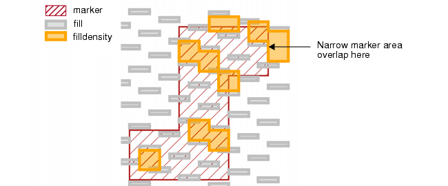
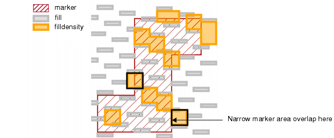
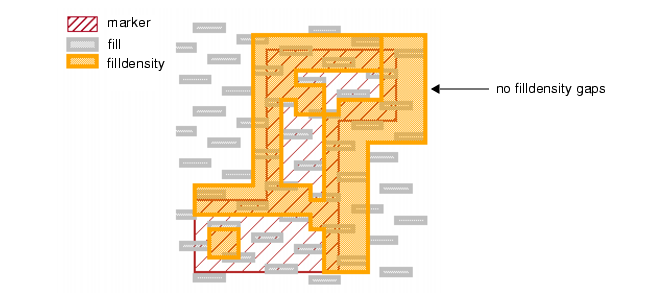
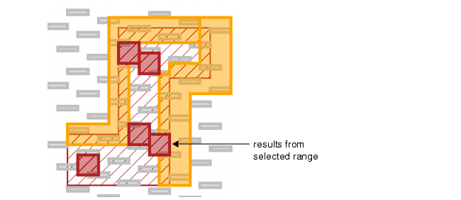

The following
procedure shows Density operations for checking polygons from one
layer that are inside of another layer. The operation has an INSIDE
OF LAYER option, but its performance can be slow in certain situations,
so it is best to avoid using that option.
One advantage to writing the Density operations in the
ways shown in this section is you can have multiple Density operations
using differing constraints (but otherwise using the same parameter
values) and they will all run concurrently.
The
d, w, and s parameters shown in this procedure can be chosen for
your process and set up as variables in the rule file.
Procedure
- Write a Density check as follows,
where you want to check the fill layer inside the marker layer:
filldensity = DENSITY fill marker < d
[AREA(fill)/AREA(marker)]
WINDOW w STEP s
RDB filldensity.rdb
filldensity { COPY filldensity }
The AREA(fill)/AREA(marker)
expression calculates the quotient of the area of the fill layer
versus the area of the marker layer in the data capture window.
If AREA(marker) is 0, that window is not output.
A potential drawback to this
expression is the denominator may not generally produce constant
values.
- Run DRC and view the results
for the filldensity layer. Results could be as follows:
Figure 1. Density Inside of
Marker Layer
Notice in Figure 1 that all output polygons have at least
some interior points coincident with the marker layer. Again, a
possible disadvantage to having AREA(marker) in the denominator
is this function would not produce constant values.
- A modified version of the
operation from Step 1 is this:
filldensity = DENSITY fill marker < d
[(AREA(fill)/!!AREA(marker))/AREA()]
WINDOW w STEP s
RDB filldensity.rdb
filldensity { COPY filldensity }
The (AREA(fill)/!!AREA(marker))/AREA()
expression calculates the quotient of the area of the fill layer
versus the area of the data capture window, if there is marker layer area in
the window. This form has the advantage of keeping the value of
the denominator constant while guaranteeing the marker layer must
be present in order to produce a result.
- Run DRC and view the results
for the filldensity layer. Results could be as follows:
Figure 2. Density Inside of
Marker Layer (Improved)
Compare these results to Figure 1. There are two additional results (outlined
in black) due to the use of the different expression.
A drawback to this method (and
the one from Step 1) is interpreting results that occur around the
perimeter of the marker layer can be tricky. Are the gaps in the
filldensity regions around the marker perimeter passing or failing?
- Another method is to ensure
that a data capture window shares at least 80 percent of its area
with the marker layer before that window’s measurement can meet
the constraint. Write this operation:
filldensity = DENSITY fill marker < d
[(~~(AREA(marker)-0.8*w*w)*(AREA(fill)/!!AREA(marker)))/AREA()]
WINDOW w STEP s
RDB filldensity.rdb
filldensity { COPY filldensity }
The expression uses elements
of the expression found in Step 3, and those elements perform the
same function here. The ~~(AREA(marker)-0.8*w*w) portion of the expression
returns a 1 if the area of the marker layer intersects at least
80 percent of the window. Otherwise this portion of the expression
returns a 0, which falls within the Density constraint.
- Run DRC and view the results
for the filldensity layer. Results could be as follows:
Figure 3. Density Using Minimum
Marker Layer Overlap
Compare this with Figure 1. Unless the data capture window shares
80 percent of its area with the marker layer, the window fails.
This method makes for cleaner
results presentation in certain respects because it treats the results
around the perimeter of the marker layer as failing. The challenge
is then to separate the results in the interior of the marker layer
from those around the perimeter. This is done using Calibre RVE.
- Open the filldensity.rdb file
in Calibre RVE and sort the DA marker column in descending order.
Scroll down until you see DA marker values that are less than 80 percent
of the maximum corresponding value in the DA column.
- Highlight all results where
DA marker is at least 80 percent of DA. (You can Shift+click a range
of rows in the Calibre RVE results table.) Results could be as follows:
Figure 4. Windows Inside Marker
Layer
Compare this with Figure 3. These are the windows inside the marker
layer that fail.
Results
You can adjust the Density constraint,
WINDOW, and STEP values and view them using similar techniques shown
in this section. Using these methods, you can optimize your results presentation.